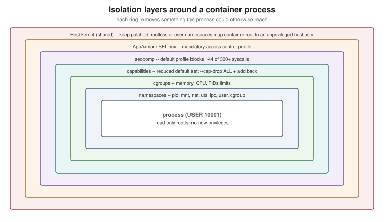

Docker Security
|
This content was generated with the assistance of AI and should be verified against the official documentation before being relied on in production. |
Containers isolate well by default, but they share a kernel with the host and they are managed by a daemon that runs
as root. Security in Docker is therefore about three things: who can talk to the daemon, how much of the kernel a
container can reach, and what code ends up inside the image. Chapter 10 of Docker: Up & Running and chapter 11 of
Learning Docker list the essentials — UID 0 inside the container, privileged containers, SELinux/AppArmor,
dropping capabilities, read-only filesystems — and all of that still applies. This page restates it against
Docker Engine 29.8.x with the controls that have appeared since: rootless mode, user namespaces, seccomp profiles,
no-new-privileges, Enhanced Container Isolation and supply-chain tooling.
Threat model
-
The daemon is root.
dockerdruns as root (except in rootless mode) and performs every privileged operation on behalf of its clients. -
The socket is root. Anyone who can reach
/var/run/docker.sockor a remote API endpoint can start a container that mounts the host filesystem — thedockergroup is root-equivalent (see Docker Architecture and the OCI). -
Images are code. Pulling and running an image runs someone else’s software, with whatever it contains.
-
The kernel is shared. A kernel vulnerability reachable from a container is a host vulnerability; the defaults below exist to shrink that reachable surface.

Derived from Docker Engine security.
Protecting the daemon
-
Never expose the API on plain TCP (
-H tcp://0.0.0.0:2375). For remote access use an SSH context (docker context create remote --docker host=ssh://admin@host) or mutual TLS on port 2376 with client certificates. -
Keep the
dockergroup to people who would getsudoanyway. -
Mount the socket into a container only for tools you trust with root on the host (CI agents, Testcontainers' Ryuk); consider a socket proxy that allows only the API calls a tool needs.
Derived from Protect the Docker daemon socket.
Rootless mode
Rootless mode runs the daemon and the containers as an unprivileged user inside a user namespace, so a daemon or container escape lands in an ordinary user account:
dockerd-rootless-setuptool.sh install # as the unprivileged user; ships with the docker-ce-rootless-extras package
systemctl --user enable --now docker
export DOCKER_HOST=unix:///run/user/$(id -u)/docker.sock
docker info --format '{{.SecurityOptions}}' # includes name=rootlessTrade-offs: ports below 1024 need extra configuration, some storage drivers and network features are restricted,
and --privileged cannot grant more than the user has. Derived from
Rootless mode.
User-namespace remapping
With "userns-remap": "default" in daemon.json, the (still rootful) daemon maps UID 0 in every container to an
unprivileged subordinate UID range on the host (dockremap). A process running as root in a container is then
nobody special on the host. It is daemon-wide, complicates bind-mount permissions, and on Engine 29 disables the
containerd image store. Derived from Isolate containers with a
user namespace.
Hardening containers at run time
Start from the principle of least privilege and add back only what the application needs:
docker run -d --name orders \
--user 10001:10001 \
--cap-drop ALL \
--security-opt no-new-privileges:true \
--read-only --tmpfs /tmp:rw,noexec,nosuid,size=64m \
--memory 768m --cpus 1.5 --pids-limit 200 \
-p 127.0.0.1:8080:8080 \
ghcr.io/myorg/orders-service:1.4.0| Control | What it does |
|---|---|
Non-root user ( |
The process has no root privileges even inside its namespaces. Set it in the Dockerfile (see
|
Capabilities ( |
Docker already drops most of root’s ~40 capabilities; dropping all and adding back one or two removes the rest. A JVM listening on 8080 needs none. |
Seccomp |
The default profile blocks around 44 of the 300+ system calls (such as |
AppArmor / SELinux |
Mandatory access control. Docker applies the |
|
Prevents gaining privileges through setuid binaries or file capabilities after start. |
|
An immutable root filesystem with explicit writable scratch space. |
Resource limits |
|
No |
|
Derived from Docker Engine security, Seccomp security profiles and AppArmor security profiles. The page Docker security non-events lists kernel vulnerabilities these defaults mitigated without anyone having to patch in time.
Secrets at build time and at run time
on the build machine or CI secret"] -->|docker build --secret| m1["RUN --mount=type=secret
file for one step only"] m1 --> l1["Image layers: secret absent"] bad1["ARG / ENV / COPY of the secret"] -.->|never| l2["Leaked into layers and history"] end subgraph Run["Run time"] s2["Secret store / CI secret / file"] -->|Compose secrets or orchestrator| m2["/run/secrets/name
read-only file"] m2 --> app["Application reads the file"] bad2["docker run -e PASSWORD=..."] -.->|avoid| l3["Visible in docker inspect
and child process env"] end
Build-time secrets are mounted with RUN --mount=type=secret (see
Image Best Practices); run-time
secrets are files provided by Compose (secrets:), Swarm or Kubernetes, not environment variables. Derived from
Build secrets and
Manage secrets securely in Docker Compose.
Image hygiene
Run images you can trace: pinned tags and digests, minimal or hardened base images, regular rebuilds, Docker Scout scanning, SBOM and provenance attestations and signatures — all covered on Image Best Practices and Supply-Chain Security. Docker Content Trust, which Learning Docker recommends for signature verification, is historical: Engine 29 removed it from the CLI; use Sigstore or Notation signatures verified at deploy time.
Docker Desktop: Enhanced Container Isolation
For organisations that manage Docker Desktop centrally, Enhanced Container Isolation runs every container in a
Linux user namespace inside the Desktop VM and prevents containers from modifying the VM or reaching the Docker
Engine socket — even --privileged ones. It is part of Docker Business’s Hardened Docker Desktop and is named here
only; see Enhanced
Container Isolation.
Consolidated checklist
The security recommendations from both books, merged and brought up to date, with the official page for each row:
| Recommendation | From | Official page |
|---|---|---|
Run processes as a non-root user |
Both books |
|
Never run |
Both books |
|
Drop capabilities you do not need |
Learning Docker ch. 11 |
|
Keep SELinux or AppArmor enabled |
Both books |
|
Keep the default seccomp profile |
New since 2015 |
|
Read-only root filesystem, explicit tmpfs |
Learning Docker ch. 11 |
|
Limit memory, CPU and PIDs |
Both books |
|
Protect the daemon socket; no plain-TCP API |
Docker: Up & Running ch. 10 |
|
Rootless daemon or user-namespace remapping |
New since 2015 |
|
|
New since 2015 |
|
Secrets as files, never in |
New since 2015 |
|
Trusted, minimal, scanned base images |
Learning Docker ch. 11 |
|
Verify image signatures (Content Trust in 2015) |
Learning Docker ch. 11 — superseded |
Retired features (Content Trust retirement); Sigstore/Notation |
The CIS Docker Benchmark turns the same controls into an auditable list and is the usual basis for compliance checks.